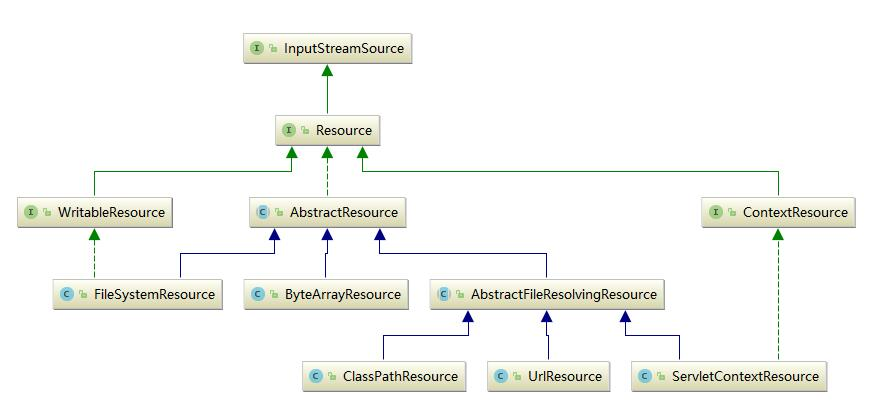
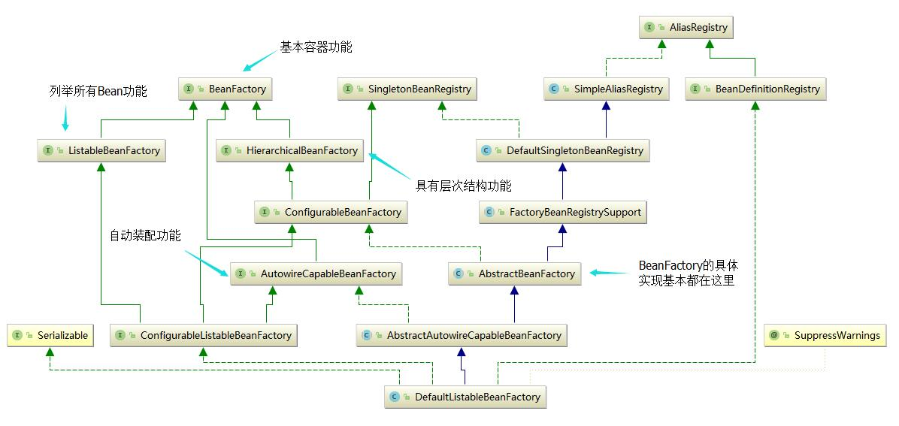
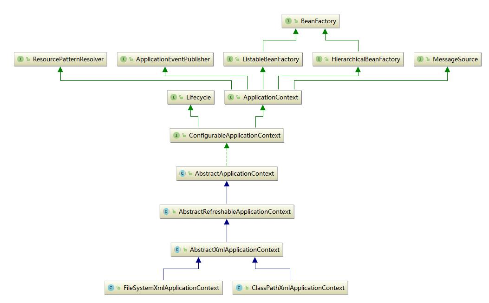
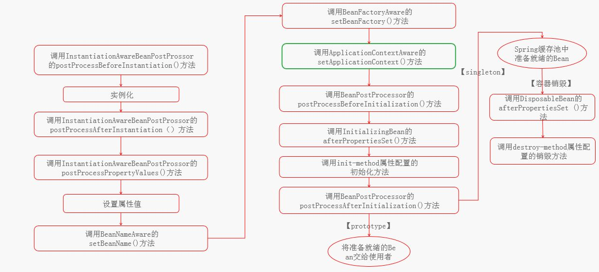
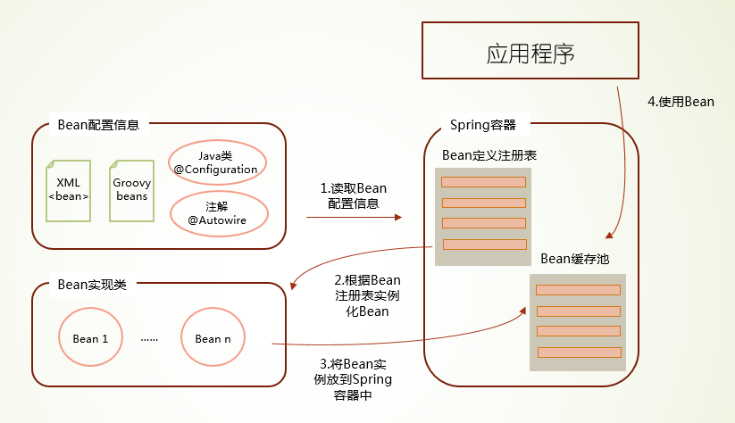

IoC概念
Ioc(Inverse of Control)的概念是为了解耦复杂的类依赖关系，在普通的Java类中，一个类依赖另外一个类一般靠构造函数、set方法以及接口注入三种方式，当类的依赖层级很多，或者依赖的类型很多的时候，类的实例化就成为了一个很复杂的过程，譬如说，在类的实例化场景中，要想实例化最终的类，就需要先把该类所需要依赖的对象进行实例化并注入，这是一个递归的过程，并且会随着类依赖的深度而越来越复杂化。
用代码举个例子，首先定义A<–B<–C的依赖关系。
|
|
然后在实例化场景中进行实例化，需要先实例化A，再实例化B，最后实例化C。
从上面的例子可以看到，由代码控制类的实例化较为繁琐，在实例化场景中，需要知道类的完整依赖关系，并且按照正确的顺序进行实例化并注入依赖，这样对于编程来说是很不友好的。
IoC概念的提出就是为了解决实例化场景中类的实例化过于复杂的问题，其实质就是将依赖的过程交由第三方Spring来处理，业务代码只需要考虑依赖的对象而不需要考虑注入的过程和方式，也不需要知道完整的依赖关系，这样就解耦了业务逻辑与实例化场景，使得编程人员可以更聚焦于业务代码。
例如在Spring中，C的实例化可以这样实现。
之所以叫做IoC控制反转，就是因为普通的实例化过程需要对象自己操作注入具体的依赖，而使用IoC则转移了控制对象，控制权交给了第三方，从而实现了控制反转，后期提出的DI(Dependency Injection,依赖注入)这个名字要更简洁明了一点。
资源抽象
Spring通过xml文件解析并加载类，然后使用反射的方式去实例化类对象，所以在Spring中，第一个问题就是如何访问资源，例如访问xml资源实现配置解析，访问class资源实现类的加载。
Spring定义了Resource接口来实现资源的抽象，并通过Resource的各种具体实现来加载资源，Resource接口的继承关系如下图所示。

下面通过代码示例说明如何加载Resource：
另外还可以通过标识和通配符的方式加载Resource：
资源类型的地址前缀列表如下：
| 地址前缀 | 示例 | 资源类型 |
|---|---|---|
| classPath: | classpath:com/ghang/domain/User.class | 从类路径加载资源 |
| file: | file:./src/main/resources/*.xml | 从文件路径加载资源 |
| http: | http://www.ghang.com/resource/beans.xml | 从Url路径加载资源，也可以是ftp等形式 |
#Bean生命周期
Spring中生成Bean主要是通过BeanFactory接口的实现类来完成的，BeanFacotry是spring中比较原始的Factory，原始的BeanFactory无法支持spring的许多插件，如AOP功能、Web应用等。

ApplicationContext接口由BeanFactory接口派生而来，因而提供BeanFactory所有的功能。ApplicationContext以一种更向面向框架的方式工作以及对上下文进行分层和实现继承。因此现在的Spring主要通过ApplicationContext生成实际的Bean，这个过程可以由代码实现，也可以由Spring通过配置文件和注解的方式实现。

在实际的开发中很少会用到BeanFactory，一般都是用ApplicationContext，在这里仅仅列举一下ApplicationContext的生命周期。

我们如果需要对Bean的生命周期进行控制的话，就需要实现Bean生命周期流程中的接口，并自定义各种操作，同时还需要将我们定义的实现类在beans.xml中配置，Spring会自动识别并注册到容器中。
#Bean装配
Spring启动时读取程序提供的Bean配置信息，并在Spring容器中生成一张对应的Bean定义注册表，然后根据这张表实例化Bean，组装好Bean之间的依赖关系，为上层应用提供准备好的运行环境。

###Bean注入
Bean的注入方式主要有两种，基于xml进行配置和基于注解进行配置，另外还有基于Java语言和Groovy DSL进行配置的方式，后两者用的比较少，这里只描述一下xml和注解方式的配置。
基于xml文件的方式进行注入时，可以有属性注入、构造函数注入以及工厂方法注入等多种形式，但是这些形式其实都已经过时了，现在主要使用的方式主要是使用p命令空间来进行注入。
采用p命令空间进行注入，需要在xml文件中声明p命名空间，然后使用p:的方式进行注入，例如注入一个User和一个Boss：
基于注解的方式进行注入在形式上要比xml文件的方式更为简洁，Spring主要提供了四个注解来标注Bean：
- @Component 通用的标注形式
- @Repository 对DAO实现类进行标注
- @Service 对Service实现类进行标注
- @Controller 对Controller实现类进行标注
用注解实现Bean的注入主要是@Autowired来实现，@Autowired注解可以作用在属性和方法上，通常的建议是将注解放在set方法上，这样可以对注入的过程进行自定义的控制。
在对Java类进行注解后，需要使用Spring提供的context命名空间来扫描并获取Bean的定义信息：
###Bean作用域
Bean主要有两个作用域，即singleton作用域和prototype作用域。在默认情况下，ApplicationContext在启动的时候自动实例化所有的singleton的Bean并缓存到容器中。
prototype作用域是指定Bean只在本次获取的时候起效，比如指定对一个prototype类型的Bean的ref，则每个ref都会返回该Bean的一个新的实例。
###属性编辑器
使用p命名空间为Bean设置属性值很便捷，但当项目扩大时，Spring的Bean配置文件会变得较为庞大，此时再为了修改Bean的属性而修改Bean配置文件就显得小题大作了，Spring提供了属性编辑器来解决这个问题。
对于Bean的某些默认属性来说，最好的设置方法是为其单独创建一个properties文件，并在文件中设置需要设置的属性值，例如连接mysql数据库的属性值可以这样设置：
创建了properties之后，需要在Bean的配置文件中引用它，可以通过默认的PropertyPlaceholderConfigure类来引入配置文件。
引入配置文件后，可以通过Bean配置文件或者注解的方式赋值，Bean配置文件的方式如下：
使用注解的方式如下：